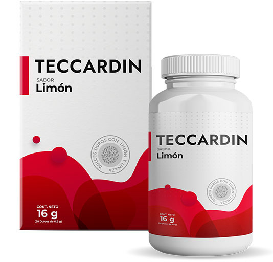

¿Qué hacer para evitar enfermedades del corazón? ¿Cómo comportarse con los picos altos de presión? ¿Qué nuevos medicamentos pueden curar la hipertensión? Sobre esto y mucho más hablará el director médico, el cardiólogo Luis Domínguez.
- Hola, doctor. ¿Es cierto que la hipertensión arterial es una de las enfermedades más comunes?
- Cordial Saludo. Hoy en día, realmente es así. La hipertensión no es solo un aumento de la presión, sino un pre de un infarto de miocardio y accidente cerebrovascular. Si se trata incorrectamente o pensar en la edad temprana y no tomar medidas en absoluto, las consecuencias pueden ser deplorables.
- ¿Cuáles son los síntomas principales de la hipertensión?
- Los principales síntomas son: dolor de cabeza, fatiga constante, hinchazón alrededor de los ojos y mareos. En las etapas iniciales de la hipertensión, las personas ignoran estos síntomas, ya que no son pronunciados. A menudo se atribuyen a otra cosa, como la fatiga después de un día de trabajo o el clima.
– ¿A qué edad comienza a desarrollarse la hipertensión arterial?
- Todo es individual. Aconsejo a todos después de los 35 años que vayan a un cardiólogo. Tenemos que alrededor del 40% de los adultos tiene hipertensión. De ellos, más de la mitad desconocen sus indicadores de presión, ya que no la sienten. Y ahí es donde está la astucia. Dicha hipertensión latente asintomática afecta el cerebro, el corazón, los riñones, los ojos y amenaza con complicaciones graves.
- ¿Con qué frecuencia las personas se enfrentan a tales complicaciones?
- Aproximadamente la mitad de los pacientes, sin consultar a un cardiólogo a tiempo, sufrieron una o más complicaciones. La mayoría de las personas creen que la hipertensión se puede combatir con medicamentos convencionales. Una historia así sucede constantemente: el paciente viene con quejas de hipertensión con palabras de que ninguna píldora ya funciona. Cuando me entero de que los medicamentos han sido aconsejados por un amigo, un farmacéutico o él mismo ha leído en Internet, me horrorizo.
Los medicamentos para la hipertensión se recetan estrictamente con prescripción por una razón, contienen sustancias potentes que, si se toman incorrectamente, arruinan la salud.
- ¿Cómo se pueden evitar los problemas cardiovasculares?
- En primer lugar, es importante llevar un estilo de vida saludable y activo: es la mejor prevención contra las enfermedades cardiovasculares. Es deseable minimizar el consumo de alimentos grasos, hacer ejercicio dos veces por semana. Además, para mantener el corazón funcionando, se necesita un complejo completo de vitaminas, por lo que es muy importante incluir muchas verduras y frutas en su dieta.
No todas las personas son capaces de construir una nutrición adecuada, en esos casos, los complejos vitamínicos naturales vienen al rescate. Su uso evitará problemas con el sistema cardiovascular. También recientemente aparecieron en el mercado medicamentos naturales especiales dirigidos específicamente al tratamiento de la hipertensión.
- Nunca he oído hablar de esas drogas. ¿Podría contarnos un poco más sobre ellas?
- El año pasado, la ciencia demostró la alta efectividad de los remedios naturales, lo que afectó a todo el mercado farmacológico. En el mercado, los medicamentos naturales creados con nuevas tecnologías comenzaron a aparecer cada vez más seguido. Respecto a su efecto, no son inferiores a los medicamentos sintéticas que conocemos.
– ¿Ya ha probado nuevos medicamentos en su práctica?
- ¡Claro! Durante seis meses realizamos estudios clínicos de un solo producto: . ¡Nos sorprendió su acción! Todavía no puedo creer los resultados que obtuve: el 74% de las personas en uno o más tratamientos se deshicieron completamente de la hipertensión. El 26% restante logró una remisión duradera.
- ¿En qué se diferencia del tratamiento convencional?
- Este producto actúa como vasodilatador, pero no afecta el músculo cardíaco. Debido a esta propiedad, la presión disminuye, pero no cambia el número de contracciones del miocardio y el volumen de eyección de sangre. Y a diferencia de los productos sintéticos, el producto natural no causa complicaciones y adicción.
- Es decir, este producto puede ser tomado por cualquier persona que tiene presión arterial alta?
- Sí. Está diseñado para personas con hipertensión y taquicardia al mismo tiempo. Los extractos naturales incluidos en la composición pueden eliminar rápidamente el agua estancada en el cuerpo, lo que contribuye a la circulación normal de la sangre. Los minerales y las vitaminas ayudan a compensar la pérdida de oligoelementos y evitar la coagulación de la sangre, lo que significa que el riesgo de coágulos de sangre. Otra propiedad importante de es que calma el sistema nervioso. En cualquier etapa de la hipertensión, su sobrecarga está contraindicada.
- ¿Cuándo el paciente sentirá mejoras?
- El resultado depende de las características individuales del cuerpo, la edad y el grado de hipertensión. Basándome en los datos de mis pacientes, puedo decir que el tinnitus, los dolores de cabeza y el insomnio desaparecen en el quinto día de admisión. Esto refiera a la normalización de la presión. Repito, el producto se toma por supuesto para lograr resultados significativos y duraderos.

-Muchas gracias por la entrevista. Tengo una última pregunta: ¿dónde puedo comprar ?
- Gracias por la invitación. Debido a la situación ocasionada por la falsificación de medicamentos populares, le aconsejo que compre el medicamento en el sitio web del fabricante. Esto lo protegerá de comprar un producto de baja calidad. Y, por lo que yo sé, el primer pedido tiene un buen descuento.


Qué artículo más interesante , normalmente no leo coasas por el estilo, pero aquí aprendí muchas cosas nuevas para mí, gracias.
Le hago caso a todas las prescripciones de mi médico, pero la presión sigue estando alta.
Apoyo este artículo. Es necesario tratar la hipertensión lo antes posible. Incluso antes del diagnóstico. Tan pronto como comienzan los problemas con la presión, inmediatamente debe preocuparse y no dejar pasar el momento. Cuanto antes empieces, más fácil será tratarla. Y el tratamiento en sí debe ser acompañado por un buen medicamento. Estoy siendo tratado con el medicamento. Lo elegí porque me gustaba su composición. Tomarlo una vez al día es suficiente para que la presión sea normal durante aproximadamente todo el día. Tomo el tratamiento dos veces al año.
No sé qué hacer. Tuve una crisis inesperada y ahora la presión es constantemente alta y me duele la cabeza…
La actividad física es imprescindible, la dieta, debe tomar todos los medicamentos que le recetaron y beber y luego estará bien. Hace poco estuve en tu lugar, creame.
También tengo la presión alta, se tiene que intentarlo. ¡Quiero acabarla para siempre!
La presión no es una broma. Así que es mejor no acabarla una vez, sino tratarla de buena manera.
Tomé pastillas para la presión arterial de forma continua, pero en un momento me comenzaron los problemas renales y tuve que cancelar casi todo. Tengo suerte de tener un buen médico. Me pedí.. La presión se normalizó casi de inmediato (era 167/100) y ahora es 125/85. Me siento perfecta.
¡Gracias por el excelente artículo! Les será útial a todos los hipertensos y aprenderán por sí mismos algo nuevo en términos de tratamiento.
Este producto limpia perfectamente los vasos sanguíneos y adelgaza la sangre. Inmediatamente mi colesterol volvió a la normalidad, desde que lo tomé. Sí, y la presión es ahora estable, sin altibajos.